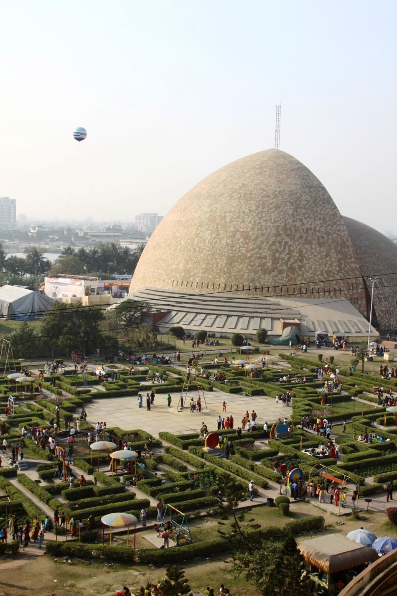

SCIENCE CITY
Science City, Kolkata is a science centre and science park in Kolkata, West Bengal, India. It is currently the largest science centre in the Indian subcontinent, containing a science museum, science park, and auditoriums.[1] The centre was inaugurated in two parts, with the 'Convention Centre Complex' being the first on December 21, 1996, followed by the rest on July 1, 1997, by the then-prime-minister Inder Kumar Gujral. On January 10, 2010, the then-prime-minister of India, Manmohan Singh, would attempt to get the second phase of Science City completed.
Galleries:
Dynamotion Hall The Dynamotion Hall offers various hands-on and interactive exhibits on wide various scientific topics with exhibits such as: Illusions. A permanent exhibition on illusions, with interactive exhibits, to see how motion and placement affect visual perception. Powers of Ten. Exhibits illustrate the size of the universe from the smallest to the biggest scales of the known universe by powers of ten. Fresh Water Aquarium. A variety of freshwater fishes in 26 tanks. Live Butterfly Enclave. A colony of live butterflies hatched on site and a screening of a film Rang Bahari Prajapati on the life cycle of the butterfly. Science On a Sphere. A spherical projection system created by NOAA providing shows of 30 minutes duration for around 70 people at a time. Convention Centre Complex
Convention Centre Complex:
Grand Theater: 2232 seating capacity main auditorium with a stage for 100 performers at a time, the largest auditorium in eastern India. Mini Auditorium: 392 seating capacity, with stage for 30 performers at a time, ideal for smaller conferences and shows. Seminar Building: Comprising eleven halls, four with seating capacity of 100 persons each, two with seating capacity of 40 persons each, two with seating capacity of 30 persons each, two with seating capacity of 15 persons, and a meeting room for 12 persons, a venue for conferences, seminars, meetings, and workshops.

Galleries:
Dynamotion Hall The Dynamotion Hall offers various hands-on and interactive exhibits on wide various scientific topics with exhibits such as: Illusions. A permanent exhibition on illusions, with interactive exhibits, to see how motion and placement affect visual perception. Powers of Ten. Exhibits illustrate the size of the universe from the smallest to the biggest scales of the known universe by powers of ten. Fresh Water Aquarium. A variety of freshwater fishes in 26 tanks. Live Butterfly Enclave. A colony of live butterflies hatched on site and a screening of a film Rang Bahari Prajapati on the life cycle of the butterfly. Science On a Sphere. A spherical projection system created by NOAA providing shows of 30 minutes duration for around 70 people at a time. Convention Centre Complex
Convention Centre Complex:
Grand Theater: 2232 seating capacity main auditorium with a stage for 100 performers at a time, the largest auditorium in eastern India. Mini Auditorium: 392 seating capacity, with stage for 30 performers at a time, ideal for smaller conferences and shows. Seminar Building: Comprising eleven halls, four with seating capacity of 100 persons each, two with seating capacity of 40 persons each, two with seating capacity of 30 persons each, two with seating capacity of 15 persons, and a meeting room for 12 persons, a venue for conferences, seminars, meetings, and workshops.